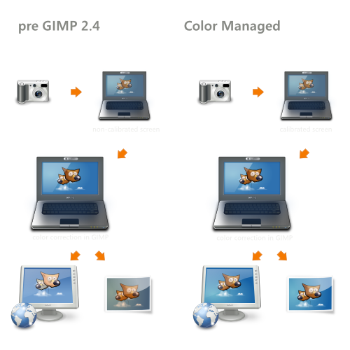

Without a proper color managed workflow (pre-2.4 GIMP), harmful adjustments can be done to images. Without a calibrated screen, one cannot assume to actually improve the color even though it may appear so.
Most digital cameras embed a color profile to individual photo files without user interaction. Digital scanners usually come with a color profile, which they also attach to the scanned images.
FIXME: To be able to preview photos with the intended colors, one has to calibrate the display device. And if you're on Linux, you're fscked at this point.